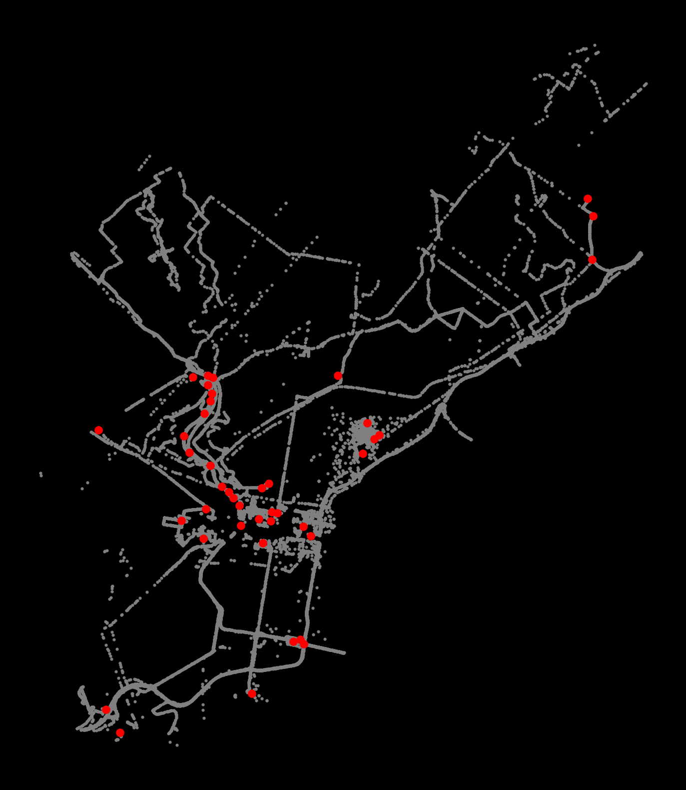

from matplotlib import pyplot as plt
import numpy as np
import pandas as pd
import geopandas as gpd
np.random.seed(42)Lecture 11B: Clustering Analysis in Python
- Section 401
- Nov 15, 2023
Last lecture (11A)
- Introduction to clustering with scikit-learn
- K-means algorithm for non-spatial clustering
Today
- Spatial clustering with the DBSCAN algorithm
- Exercise on spatial clustering of NYC taxi trips
Part 2: Spatial clustering
Now on to the more traditional view of “clustering”…
DBSCAN
“Density-Based Spatial Clustering of Applications with Noise”
- Clusters are areas of high density separated by areas of low density.
- Can identify clusters of any shape
- Good at separating core samples in high-density regions from low-density noise samples
- Best for spatial data
Two key parameters
- eps: The maximum distance between two samples for them to be considered as in the same neighborhood.
- min_samples: The number of samples in a neighborhood for a point to be considered as a core point (including the point itself).
Example Scenario

min_samples= 4.- Point A and the other red points are core points
- There are at least
min_samples(4) points (including the point itself) within a distance ofepsfrom each of these points. - These points are all reachable from one another, so they for a cluster
- There are at least
- Points B and C are edge points of the cluster
- They are reachable (within a distance of
eps) from the core points so they are part of the cluster - They do not have at least
min_ptswithin a distance ofepsso they are not core points
- They are reachable (within a distance of
- Point N is a noise point — it not within a distance of
epsfrom any of the cluster points
Importance of parameter choices
Higher min_samples or a lower eps requires a higher density necessary to form a cluster.
Example: OpenStreetMap GPS traces in Philadelphia
- Data extracted from the set of 1 billion GPS traces from OSM.
- CRS is EPSG=3857 —
xandyin units of meters
coords = gpd.read_file('./data/osm_gps_philadelphia.geojson')
coords.head() | x | y | geometry | |
|---|---|---|---|
| 0 | -8370750.5 | 4865303.0 | POINT (-8370750.500 4865303.000) |
| 1 | -8368298.0 | 4859096.5 | POINT (-8368298.000 4859096.500) |
| 2 | -8365991.0 | 4860380.0 | POINT (-8365991.000 4860380.000) |
| 3 | -8372306.5 | 4868231.0 | POINT (-8372306.500 4868231.000) |
| 4 | -8376768.5 | 4864341.0 | POINT (-8376768.500 4864341.000) |
num_points = len(coords)
print(f"Total number of points = {num_points}")Total number of points = 52358DBSCAN basics
from sklearn.cluster import dbscan dbscan?Signature: dbscan( X, eps=0.5, *, min_samples=5, metric='minkowski', metric_params=None, algorithm='auto', leaf_size=30, p=2, sample_weight=None, n_jobs=None, ) Docstring: Perform DBSCAN clustering from vector array or distance matrix. Read more in the :ref:`User Guide <dbscan>`. Parameters ---------- X : {array-like, sparse (CSR) matrix} of shape (n_samples, n_features) or (n_samples, n_samples) A feature array, or array of distances between samples if ``metric='precomputed'``. eps : float, default=0.5 The maximum distance between two samples for one to be considered as in the neighborhood of the other. This is not a maximum bound on the distances of points within a cluster. This is the most important DBSCAN parameter to choose appropriately for your data set and distance function. min_samples : int, default=5 The number of samples (or total weight) in a neighborhood for a point to be considered as a core point. This includes the point itself. metric : str or callable, default='minkowski' The metric to use when calculating distance between instances in a feature array. If metric is a string or callable, it must be one of the options allowed by :func:`sklearn.metrics.pairwise_distances` for its metric parameter. If metric is "precomputed", X is assumed to be a distance matrix and must be square during fit. X may be a :term:`sparse graph <sparse graph>`, in which case only "nonzero" elements may be considered neighbors. metric_params : dict, default=None Additional keyword arguments for the metric function. .. versionadded:: 0.19 algorithm : {'auto', 'ball_tree', 'kd_tree', 'brute'}, default='auto' The algorithm to be used by the NearestNeighbors module to compute pointwise distances and find nearest neighbors. See NearestNeighbors module documentation for details. leaf_size : int, default=30 Leaf size passed to BallTree or cKDTree. This can affect the speed of the construction and query, as well as the memory required to store the tree. The optimal value depends on the nature of the problem. p : float, default=2 The power of the Minkowski metric to be used to calculate distance between points. sample_weight : array-like of shape (n_samples,), default=None Weight of each sample, such that a sample with a weight of at least ``min_samples`` is by itself a core sample; a sample with negative weight may inhibit its eps-neighbor from being core. Note that weights are absolute, and default to 1. n_jobs : int, default=None The number of parallel jobs to run for neighbors search. ``None`` means 1 unless in a :obj:`joblib.parallel_backend` context. ``-1`` means using all processors. See :term:`Glossary <n_jobs>` for more details. If precomputed distance are used, parallel execution is not available and thus n_jobs will have no effect. Returns ------- core_samples : ndarray of shape (n_core_samples,) Indices of core samples. labels : ndarray of shape (n_samples,) Cluster labels for each point. Noisy samples are given the label -1. See Also -------- DBSCAN : An estimator interface for this clustering algorithm. OPTICS : A similar estimator interface clustering at multiple values of eps. Our implementation is optimized for memory usage. Notes ----- For an example, see :ref:`examples/cluster/plot_dbscan.py <sphx_glr_auto_examples_cluster_plot_dbscan.py>`. This implementation bulk-computes all neighborhood queries, which increases the memory complexity to O(n.d) where d is the average number of neighbors, while original DBSCAN had memory complexity O(n). It may attract a higher memory complexity when querying these nearest neighborhoods, depending on the ``algorithm``. One way to avoid the query complexity is to pre-compute sparse neighborhoods in chunks using :func:`NearestNeighbors.radius_neighbors_graph <sklearn.neighbors.NearestNeighbors.radius_neighbors_graph>` with ``mode='distance'``, then using ``metric='precomputed'`` here. Another way to reduce memory and computation time is to remove (near-)duplicate points and use ``sample_weight`` instead. :func:`cluster.optics <sklearn.cluster.optics>` provides a similar clustering with lower memory usage. References ---------- Ester, M., H. P. Kriegel, J. Sander, and X. Xu, `"A Density-Based Algorithm for Discovering Clusters in Large Spatial Databases with Noise" <https://www.dbs.ifi.lmu.de/Publikationen/Papers/KDD-96.final.frame.pdf>`_. In: Proceedings of the 2nd International Conference on Knowledge Discovery and Data Mining, Portland, OR, AAAI Press, pp. 226-231. 1996 Schubert, E., Sander, J., Ester, M., Kriegel, H. P., & Xu, X. (2017). :doi:`"DBSCAN revisited, revisited: why and how you should (still) use DBSCAN." <10.1145/3068335>` ACM Transactions on Database Systems (TODS), 42(3), 19. File: ~/mambaforge/envs/musa-550-fall-2023/lib/python3.10/site-packages/sklearn/cluster/_dbscan.py Type: function
# some parameters to start with
eps = 100 # in meters
min_samples = 50
cores, labels = dbscan(coords[["x", "y"]], eps=eps, min_samples=min_samples)The function returns two objects, which we call cores and labels. cores contains the indices of each point which is classified as a core.
# The first 5 elements
cores[:5]array([1, 2, 4, 6, 8])The length of cores tells you how many core samples we have:
num_cores = len(cores)
print(f"Number of core samples = {num_cores}")Number of core samples = 29655The labels tells you the cluster number each point belongs to. Those points classified as noise receive a cluster number of -1:
# The first 5 elements
labels[:5]array([-1, 0, 0, -1, 1])The labels array is the same length as our input data, so we can add it as a column in our original data frame
# Add our labels to the original data
coords['label'] = labelscoords.head()| x | y | geometry | label | |
|---|---|---|---|---|
| 0 | -8370750.5 | 4865303.0 | POINT (-8370750.500 4865303.000) | -1 |
| 1 | -8368298.0 | 4859096.5 | POINT (-8368298.000 4859096.500) | 0 |
| 2 | -8365991.0 | 4860380.0 | POINT (-8365991.000 4860380.000) | 0 |
| 3 | -8372306.5 | 4868231.0 | POINT (-8372306.500 4868231.000) | -1 |
| 4 | -8376768.5 | 4864341.0 | POINT (-8376768.500 4864341.000) | 1 |
The number of clusters is the number of unique labels minus one (because noise has a label of -1)
num_clusters = coords['label'].nunique() - 1
print(f"number of clusters = {num_clusters}")number of clusters = 42We can group by the label column to get the size of each cluster:
cluster_sizes = coords.groupby('label', as_index=False).size()
cluster_sizes| label | size | |
|---|---|---|
| 0 | -1 | 19076 |
| 1 | 0 | 17763 |
| 2 | 1 | 4116 |
| 3 | 2 | 269 |
| 4 | 3 | 2094 |
| 5 | 4 | 131 |
| 6 | 5 | 127 |
| 7 | 6 | 116 |
| 8 | 7 | 2077 |
| 9 | 8 | 225 |
| 10 | 9 | 1051 |
| 11 | 10 | 260 |
| 12 | 11 | 765 |
| 13 | 12 | 131 |
| 14 | 13 | 110 |
| 15 | 14 | 300 |
| 16 | 15 | 137 |
| 17 | 16 | 591 |
| 18 | 17 | 387 |
| 19 | 18 | 274 |
| 20 | 19 | 154 |
| 21 | 20 | 294 |
| 22 | 21 | 71 |
| 23 | 22 | 154 |
| 24 | 23 | 74 |
| 25 | 24 | 106 |
| 26 | 25 | 135 |
| 27 | 26 | 86 |
| 28 | 27 | 277 |
| 29 | 28 | 134 |
| 30 | 29 | 90 |
| 31 | 30 | 102 |
| 32 | 31 | 57 |
| 33 | 32 | 51 |
| 34 | 33 | 83 |
| 35 | 34 | 50 |
| 36 | 35 | 50 |
| 37 | 36 | 78 |
| 38 | 37 | 53 |
| 39 | 38 | 68 |
| 40 | 39 | 50 |
| 41 | 40 | 91 |
| 42 | 41 | 50 |
# All points get assigned a cluster label (-1 reserved for noise)
cluster_sizes['size'].sum() == num_pointsTrueThe number of noise points is the size of the cluster with label “-1”:
num_noise = cluster_sizes.iloc[0]['size']
print(f"number of noise points = {num_noise}")number of noise points = 19076If points aren’t noise or core samples, they must be edges:
num_edges = num_points - num_cores - num_noise
print(f"Number of edge points = {num_edges}")Number of edge points = 3627Now let’s plot the noise and clusters
- Extract each cluster: select points with the same label number
- Plot the cluster centers: the mean
xand meanyvalue for each cluster
# Setup figure and axis
f, ax = plt.subplots(figsize=(10, 10), facecolor="black")
# Plot the noise samples in grey
noise = coords.loc[coords["label"] == -1]
ax.scatter(noise["x"], noise["y"], c="grey", s=5, linewidth=0)
# Loop over each cluster number
for label_num in range(0, num_clusters):
# Extract the samples with this label number
this_cluster = coords.loc[coords["label"] == label_num]
# Calculate the mean (x,y) point for this cluster in red
x_mean = this_cluster["x"].mean()
y_mean = this_cluster["y"].mean()
# Plot this centroid point in red
ax.scatter(x_mean, y_mean, linewidth=0, color="red")
# Format
ax.set_axis_off()
ax.set_aspect("equal")
Extending DBSCAN beyond just spatial coordinates
DBSCAN can perform high-density clusters from more than just spatial coordinates, as long as they are properly normalized
Exercise: Extracting patterns from NYC taxi rides
I’ve extracted data for taxi pickups or drop offs occurring in the Williamsburg neighborhood of NYC from the NYC taxi open data.
Includes data for: - Pickup/dropoff location - Fare amount - Trip distance - Pickup/dropoff hour
Goal: identify clusters of similar taxi rides that are not only clustered spatially, but also clustered for features like hour of day and trip distance
Inspired by this CARTO blog post
Step 1: Load the data
See the data/williamsburg_taxi_trips.csv file in this week’s repository.
Step 2: Extract and normalize several features
We will focus on the following columns: - pickup_x and pickup_y - dropoff_x and dropoff_y - trip_distance - pickup_hour
Use the StandardScaler to normalize these features.
Step 3: Run DBSCAN to extract high-density clusters
- We want the highest density clusters, ideally no more than about 30-50 clusters.
- Run the DBSCAN and experiment with different values of
epsandmin_samples- I started with
epsof 0.25 andmin_samplesof 50
- I started with
- Add the labels to the original data frame and calculate the number of clusters. It should be less than 50 or so.
Hint: If the algorithm is taking a long time to run (more than a few minutes), the eps is probably too big!
Step 4: Identify the 5 largest clusters
Group by the label, calculate and sort the sizes to find the label numbers of the top 5 largest clusters
Step 5: Get mean statistics for the top 5 largest clusters
To better identify trends in the top 5 clusters, calculate the mean trip distance and pickup_hour for each of the clusters.
Step 6a: Visualize the top 5 largest clusters
Now visualize the top 5 largest clusters: - plot the dropoffs and pickups (same color) for the 5 largest clusters - include the “noise” samples, shown in gray
Hints: - For a given cluster, plot the dropoffs and pickups with the same color so we can visualize patterns in the taxi trips - A good color scheme for a black background is given below
# a good color scheme for a black background
colors = ['aqua', 'lime', 'red', 'fuchsia', 'yellow']# EXAMPLE: enumerating a list
for i, label_num in enumerate([0, 1, 2, 3, 4]):
print(f"i = {i}")
print(f"label_num = {label_num}")i = 0
label_num = 0
i = 1
label_num = 1
i = 2
label_num = 2
i = 3
label_num = 3
i = 4
label_num = 4If you’re feeling ambitious, and time-permitting…
Step 6b: Visualizing one cluster at a time
Another good way to visualize the results is to explore the other clusters one at a time, plotting both the pickups and dropoffs to identify the trends.
Use different colors for pickups/dropoffs to easily identify them.
Make it a function so we can repeat it easily:
Step 7: an interactive map of clusters with hvplot + datashader
- We’ll plot the pickup/dropoff locations for the top 5 clusters
- Use the
.hvplot.scatter()function to plot the x/y points - Specify the
c=keyword as the column holding the cluster label - Specify the aggregator as
ds.count_cat("label")— this will color the data points using our categorical color map - Use the
datashade=Truekeyword to tell hvplot to use datashader - Add a background tile using Geoviews
- Combine the pickups, dropoffs, and background tile into a single interactive map
# map colors to the top 5 cluster labels
color_key = dict(zip(top5_labels, ['aqua', 'lime', 'red', 'fuchsia', 'yellow']))
print(color_key){1: 'aqua', 2: 'lime', 3: 'red', 0: 'fuchsia', 6: 'yellow'}That’s it!
Next time, regressions with scikit-learn!